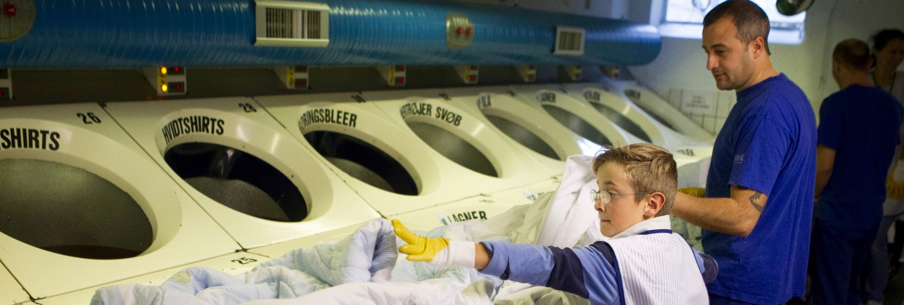
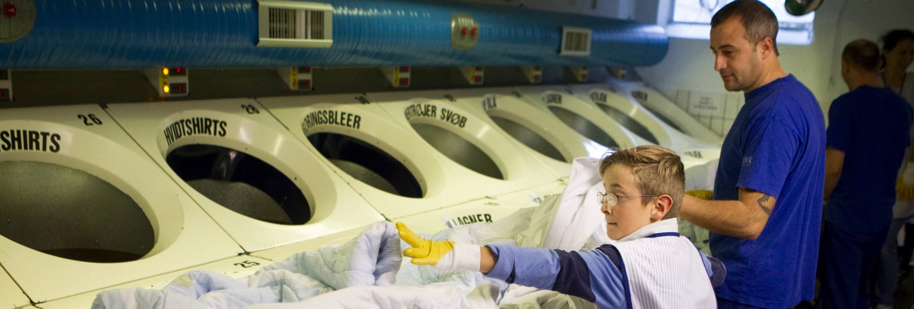

midtVask er Danmarks største hospitalsvaskeri og….
Vores kunder er hospitaler i region midtjylland. Vi servicerer og udvikler sammen med vores kunder, og leverer totalløsninger med fokus på optimering indenfor områderne, uniformer, linned og hjælpemidler, senge, gardiner og logstik .
Alle vores løsninger overholder de særlige hygiejnekrav på hospitaler og omfatter levering, vask, vedligeholdelse og service.
Vi er 180 kanondygtige medarbejdere fra 35 nationaliteter, mellem 18 og 67 år, ligelig blanding af mænd og kvinder. Vi vasker over 6 mio. kg. om året og servicerer hospitaler og patienter med uniformer, linned, hjælpemidler og service.
Linnedservice
Vi vasker og servicere hospitaler i regionmidtjylland med linned. Vi udvikler linned og specialartikler sammen med kunderne. Vi udvikler løbende linnedartiklerne med kunderne. Vi leverer og udvikler metoder for udlevering af uniformer.
Uniformsservice
Vi vasker og servicere hospitalerne i region midtjylland med uniformer. Vi levere og sikre at der altid er rene og pæne uniformer på hospitalerne. Vi udvikler løbende uniformerne og tilbehør sammen med kunderne. Vi leverer og udvikler metoder for udlevering af uniformer.
Sengeservice
Vi servicere AUH med senge – dvs vi vasker, kontroller, opreder senge, og sørger for at hospitalet har rene senge når de behøver dette. Vi star for den central vask af senge og den decentrale vask af senge.
Hjælpemiddelservice
Hjælpemiddelservice håndterer og distribuerer hjælpemidler og behandlingsapparatur, som udlånes til patienter i forbindelse med deres behandling på AUH.
Hjælpemiddelservice er fysisk placeret på Ceres Allé 11, Aarhus C.
midtVask vinder Årets Læreplads 2015
I begrundelsen for valget af Midtvask hedder det bl.a.: ”En arbejdsplads med stor faglig og social bevidsthed, som sætter klare og tydelige mål for eleverne...Læs mere
midtVask nomineret til CSR-Prisen 2015
Hos midtVask skaber de hver dag synergi mellem det at være en mangfoldig virksomhed og et højeffektivt vaskeri. Juryen fremhæver særligt virksomhed...Læs mere
midtVask nomineret til ArbejdsmiljøPrisen 2015
En lille app har gjort den store forskel hos midtVask. App’en har gjort det let for medarbejderne at dele erfaringer om potentielle farlige arbejdssituationer...Læs mere